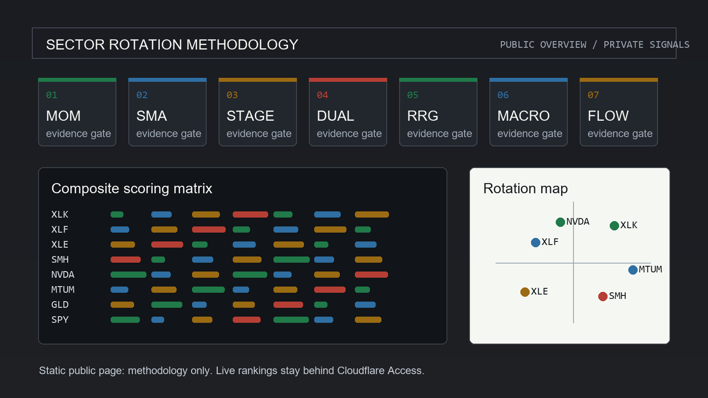

Cross-sectional momentum
Ranks instruments by 12-1 momentum so recent winners are compared against their own peer group.
Seven-pillar research framework
A public overview of the momentum, trend, rotation, macro, and institutional-flow framework behind the protected dashboard.
Dashboard access is separate and protected by Cloudflare Access.
Purpose
The methodology combines peer-reviewed momentum research with practitioner trend, rotation, and flow tools. It is designed to identify leadership, reject weak rallies, and surface deterioration before a position becomes a larger risk.

The model
Ranks instruments by 12-1 momentum so recent winners are compared against their own peer group.
Checks whether each instrument and the broader market remain above a long-term trend filter.
Requires price strength above a rising 30-week moving average with positive relative strength.
Combines relative leadership with an absolute momentum check versus a T-bill proxy.
Tracks whether leadership is leading, weakening, lagging, or improving versus the benchmark.
Applies a modest macro tilt so sector leadership is interpreted in the current cycle context.
Uses volume and flow evidence as a veto when price strength lacks sponsorship.
Research boundary
This page is for educational and research purposes only and is not investment advice. It does not publish current rankings, recommendations, or protected dashboard content.